Gum Fling throwing field, second pass (2026-11-18)
Hand-pixeled grids in draw_fling_field.py; counts and sprite budget in numbers.txt.
First pass kept in old/. Mocks now use only the sky and the four parallax planes: no arena platforms, balloons, clouds or airship.
The dotted arc and the two birds are for scale (a 62 M throw).
- Turf: 4 hand columns of 16 px in an irregular order of 32 (512 px) instead of one 32 px period; tufts lit from the right, shadow on the left.
- Chalk: one width from top to bottom, quieter colours, grass gaps; the 50 M line is one gold stripe, no steps.
- Puff: 6 frames of 32 x 32 dust with flying blades, no dark outline.
- Storm turf retuned to a cold wet green; boards, chalk and poles have one palette per mood.
Dusk
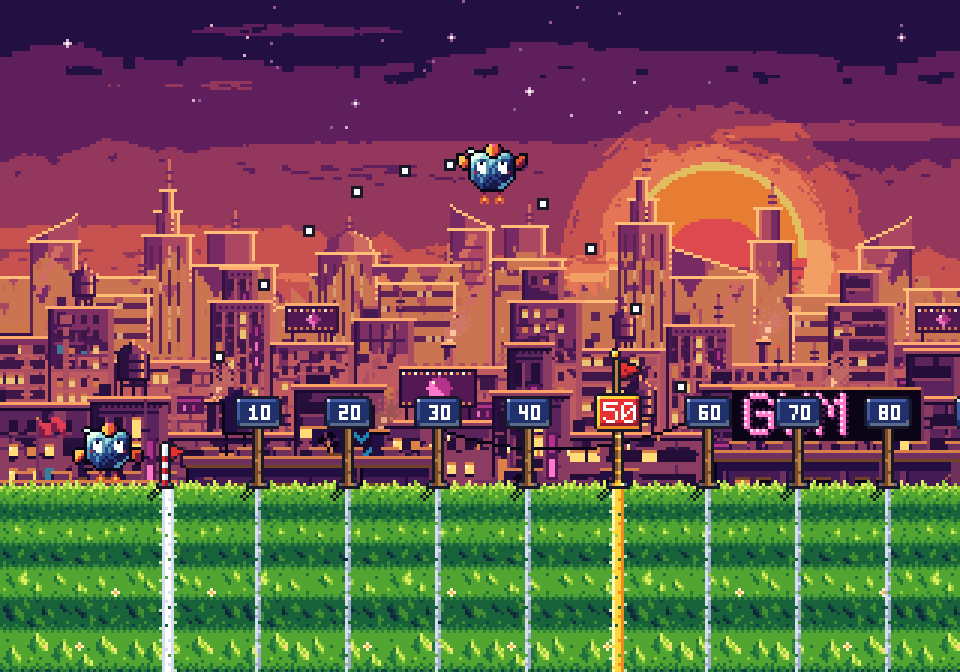
Moon
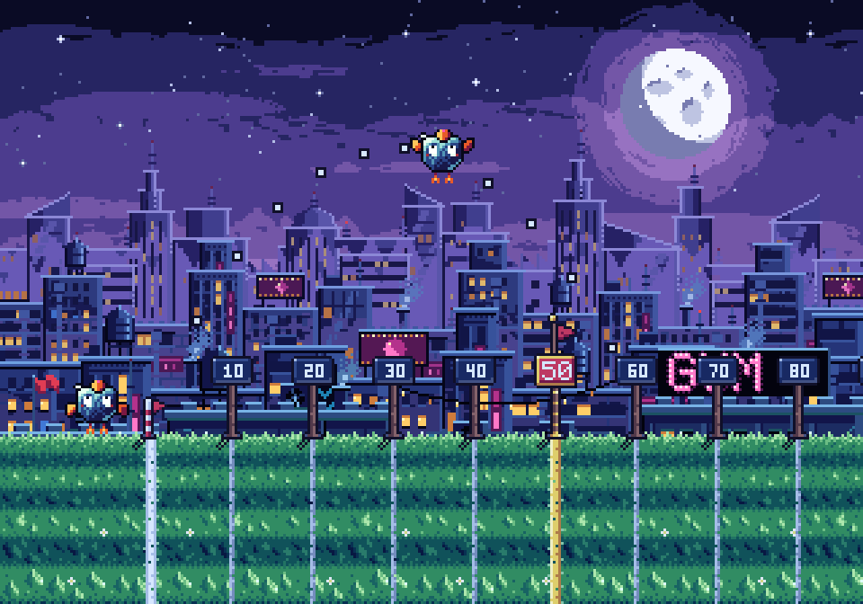
Storm
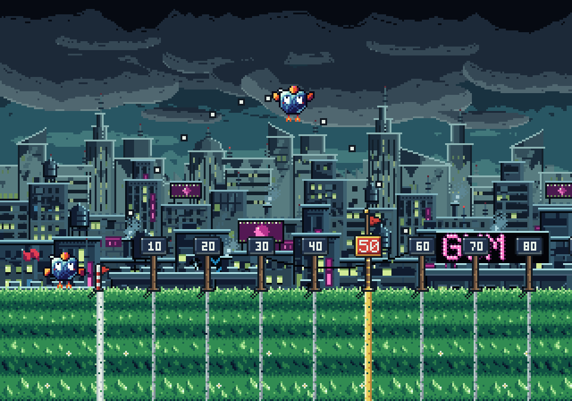
Old against new: mocks
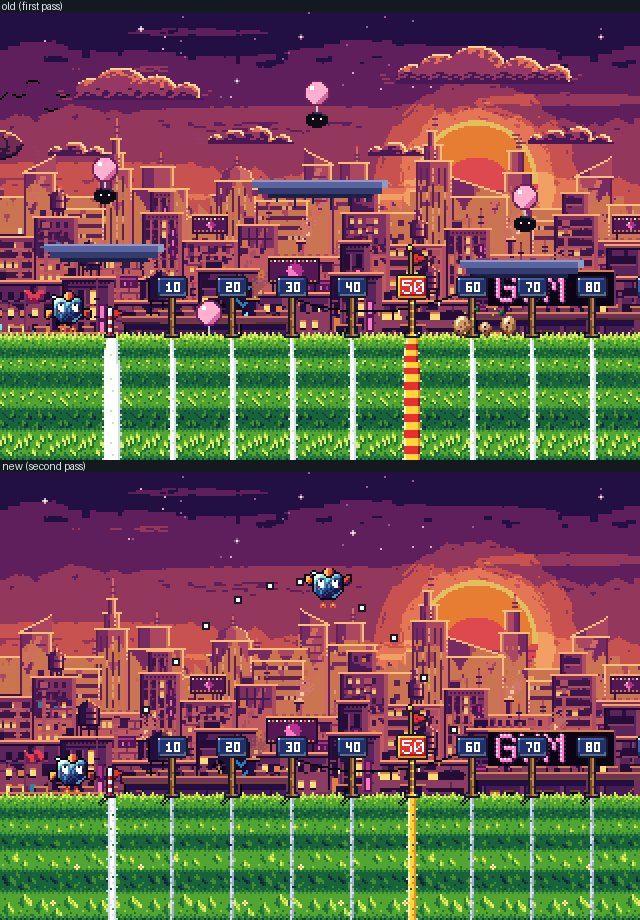
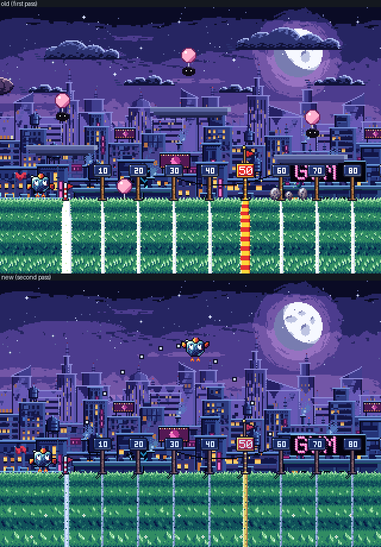
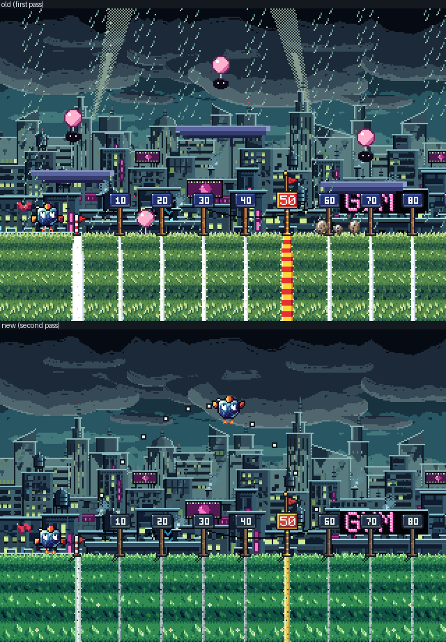
Old against new: closeup at 50 M, three moods
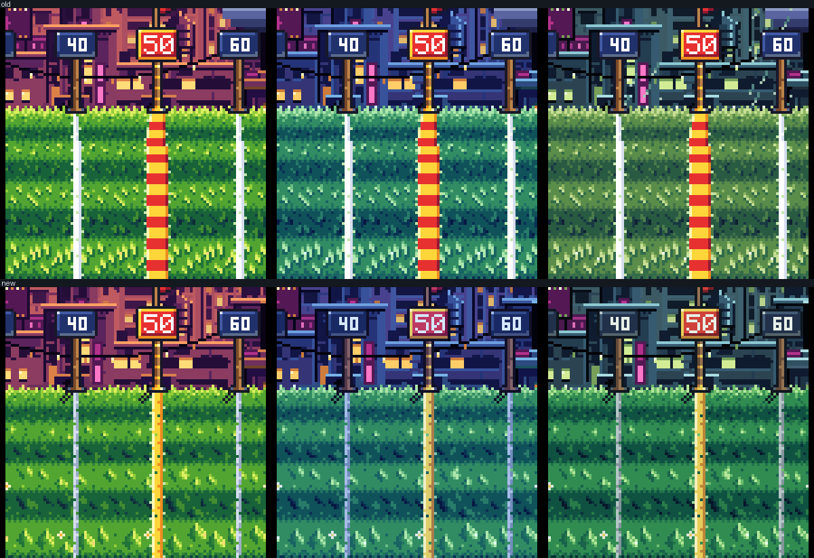
Old against new: turf repeat
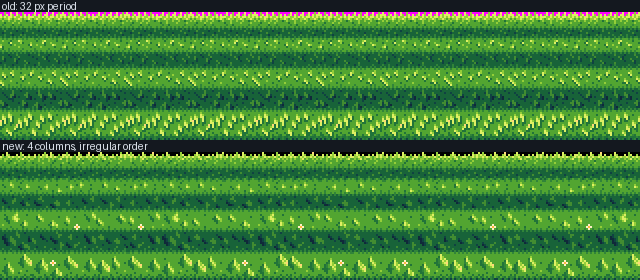
Turf strip per mood
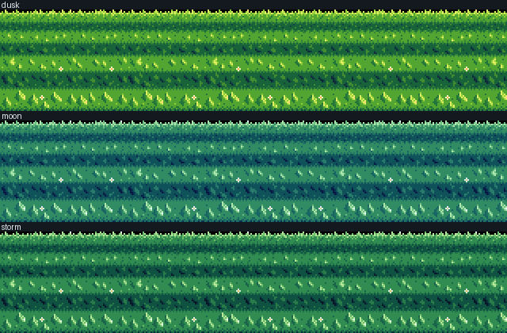
Old against new: landing puff
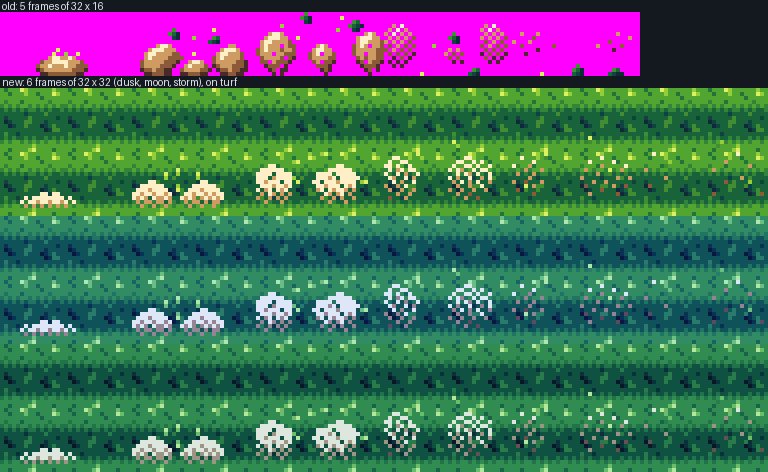
Landing puff in motion
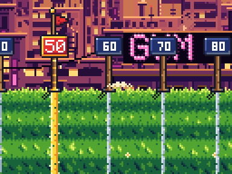
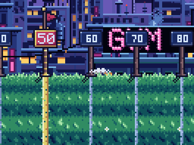
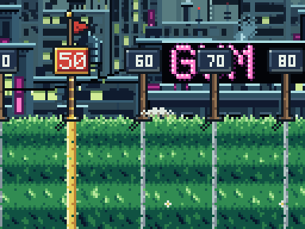
Gear sheet (dusk, moon, storm palettes)
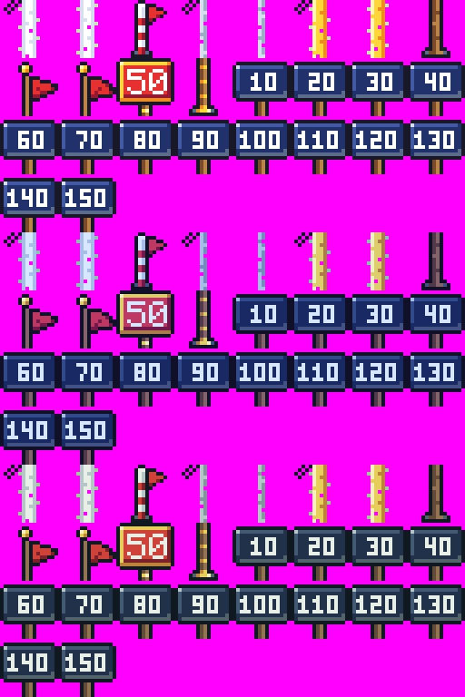
Turf column sheets (P Q R S)
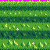
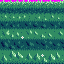
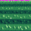